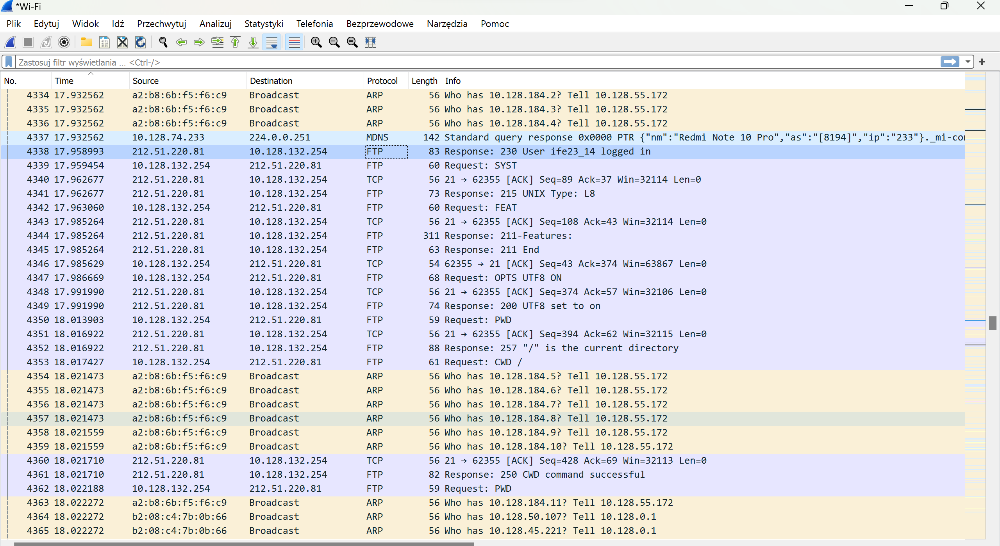

1.1 Describe ISO/OSI model and protocol assignment
The OSI model defines seven layers:
The OSI (Open Systems Interconnection) model is a conceptual framework
used to understand how different protocols communicate over a network. It
consists of seven layers:
Physical Layer
The physical layer is the lowest layer in the OSI model. It deals with the
transmission and reception of raw data bits over a physical medium, such
as copper wires, optical fibers, or wireless channels. It defines the
physical characteristics of the transmission medium, including connectors,
voltage levels, and data transmission rates.
Data Link Layer
The data link layer establishes and maintains a reliable link between two
adjacent nodes connected by a physical layer. It ensures error-free
transmission of data by providing framing, error detection, and, if
possible, correction. It also manages access to the physical medium,
resolves hardware addresses (MAC addresses), and controls data flow
between devices.
Network Layer
The network layer facilitates communication between different networks. It
is responsible for logical addressing, routing packets across multiple
networks, and determining the best path for data to reach its destination.
The Internet Protocol (IP) operates at this layer, and it enables
internetwork communication.
Transport Layer
The transport layer ensures end-to-end communication between host devices.
It segments and reassembles data into smaller units known as segments,
provides error checking, flow control, and ensures data integrity. It
includes protocols like Transmission Control Protocol (TCP) and User
Datagram Protocol (UDP).
Session Layer
The session layer establishes, maintains, and terminates communication
sessions between applications on different devices. It manages the dialog
control and synchronization between presentation layer entities, allowing
for efficient data exchange.
Presentation Layer
The presentation layer is responsible for data translation, encryption,
compression, and formatting. It ensures that data exchanged between
applications is readable, regardless of the differences in data
representation across different systems.
Application Layer
The application layer is the topmost layer and interacts directly with the
end-user. It provides network services directly to applications, allowing
users to access network resources and services. Various protocols such as
HTTP, FTP, SMTP, and DNS operate at this layer, enabling specific
application functionalities.
1.2. Protocol Data Units for Layers
- Physical Layer - Bits
- Data Link Layer - Frames
- Network Layer - Packets
- Transport Layer - Segments
- Session Layer - Data
- Presentation Layer - Data
- Application Layer - Messages
1.3. Protocol Assignments
| Protocol |
Layer |
| ARP (Address Resolution Protocol) |
Data Link Layer |
| Bluetooth |
Data Link Layer |
| DHCP (Dynamic Host Configuration Protocol) |
Application Layer |
| DNS (Domain Name System) |
Application Layer |
| FTP (File Transfer Protocol) |
Application Layer |
| HTTP (Hypertext Transfer Protocol) |
Application Layer |
| ICMP (Internet Control Message Protocol) |
Network Layer |
| IEEE 1394 |
Physical Layer |
| IEEE 802.11 (Wi-Fi) |
Data Link Layer |
| IGMP (Internet Group Management Protocol) |
Network Layer |
| IPv4 (Internet Protocol version 4) |
Network Layer |
| IPv6 (Internet Protocol version 6) |
Network Layer |
| L2TP (Layer 2 Tunneling Protocol) |
Data Link Layer |
| MIME (Multipurpose Internet Mail Extensions) |
Application Layer |
| NetBIOS (Network Basic Input/Output System) |
Application Layer |
| NNTP (Network News Transfer Protocol) |
Application Layer |
| RS-232 |
Physical Layer |
| RS-449 |
Physical Layer |
| RTP (Real-time Transport Protocol) |
Transport Layer |
| SIP (Session Initiation Protocol) |
Application Layer |
| SLIP (Serial Line Internet Protocol) |
Data Link Layer |
| SSL (Secure Sockets Layer) |
Transport Layer |
| TCP (Transmission Control Protocol) |
Transport Layer |
| Telnet |
Application Layer |
| TLS (Transport Layer Security) |
Transport Layer |
| UDP (User Datagram Protocol) |
Transport Layer |
| USB (Universal Serial Bus) |
Physical Layer |
Screenshots
task 2.1
task 2.2
task 2.3
task 2.4
task 2.5
ICMP, integral to the TCP/IP suite at the IP layer (Layer 3), operates
alongside IP processing. It's recognized as the protocol used by the
'ping' command for sending echo requests and receiving replies. However,
due to security concerns, many routers disable echo responses, affecting
the ping command's usefulness. ICMP's primary role is to report basic
packet delivery problems, including: Handling Maximum Transmission Unit
(MTU) limitations by fragmenting large packets or sending fragmentation
needed messages. Notifying about packet expiration after traversing
multiple hops (time exceeded error). Indicating when packets fail to
reach their destination (e.g., ARP broadcast mismatch). Communicating
potential routing issues, although routing protocols often handle this
better. Disabling certain ICMP functions, particularly route suggestion,
is advisable for security reasons, as routing protocols are more
effective in determining optimal routes. Formally defined in RFC 792,
ICMP sets standards for its implementation and usage within networks.
task 2.6

| Protocol |
Layer |
| ARP (Address Resolution Protocol) |
Data Link Layer |
| DNS |
Data Link Layer |
| ICMP |
Data Link Layer |
| MDNS |
Data Link Layer |
| QUIC |
Data Link Layer |
| SSH |
Data Link Layer |
| SSHV2 |
Data Link Layer |
| TCP |
Data Link Layer |
<<<<<<< HEAD
task 2.8
-
FTP (File Transfer Protocol):
FTP is one of the oldest and most widely used protocols for transferring files over a network.
It operates on two channels: the command channel (used for sending commands) and the data channel (used for transferring files).
FTP supports authentication and authorization mechanisms, but it lacks encryption, making it less secure for transmitting sensitive data.
-
SFTP (SSH File Transfer Protocol):
SFTP is a secure file transfer protocol that runs over the SSH (Secure Shell) protocol,
providing a secure connection for file transfer.
It encrypts both commands and data, ensuring confidentiality and integrity. SFTP is commonly used for secure and reliable file transfers.
-
FTPS (File Transfer Protocol Secure):
FTPS is an extension of FTP that adds support for Transport Layer Security (TLS) or Secure Sockets Layer (SSL) encryption.
It offers authentication and encryption similar to SFTP but operates over separate control and data channels, providing security for FTP-based file transfers.
-
HTTP (Hypertext Transfer Protocol):
While primarily used for web browsing, HTTP can also facilitate file transfers.
However, it's less efficient than specialized file transfer protocols because it wasn't designed specifically for large file transfers.
-
HTTPS (Hypertext Transfer Protocol Secure):
HTTPS is a secure version of HTTP that uses encryption (SSL/TLS) to secure data transmission.
It's commonly used for secure web communication, including file downloads or uploads via websites.
-
SCP (Secure Copy Protocol):
SCP is a secure file transfer protocol that uses SSH for data transfer and authentication.
It allows secure copying of files between hosts on a network.
-
TFTP (Trivial File Transfer Protocol):
TFTP is a simpler form of FTP, often used for transferring small amounts of data where simplicity
and low overhead are more critical than advanced features.
However, TFTP lacks security features like authentication and encryption.
-
AS2 (Applicability Statement 2):
AS2 is a protocol used for secure and reliable data exchange between businesses over the internet.
It employs digital certificates and encryption for data integrity and confidentiality.
task 2.9
=======
task 2.8
Several protocols are commonly used for file transfer, each serving
different purposes and offering various features. Here are three
widely used file transfer protocols: File Transfer Protocol (FTP):
Purpose: FTP is one of the oldest and most traditional protocols used
for transferring files over a network. It is often employed for
website maintenance, software distribution, and general file sharing.
How it Works: FTP operates over two channels - a command channel (for
sending commands) and a data channel (for transferring files). It can
work in either active or passive mode. While FTP itself does not
provide encryption, FTPS (FTP Secure) is a secured version that adds a
layer of encryption using SSL/TLS. Secure File Transfer Protocol
(SFTP): Purpose: SFTP is a secure version of FTP designed to provide
encrypted file transfer and improved security features. It is often
used for secure remote file access and management. How it Works: SFTP
operates over a secure channel using SSH (Secure Shell) for
authentication and encryption. Unlike FTP, SFTP uses a single
encrypted channel for both command and data. Hypertext Transfer
Protocol (HTTP) and Hypertext Transfer Protocol Secure (HTTPS):
Purpose: While HTTP and HTTPS are primarily used for transferring web
content, they can also be used for file transfer, especially for
downloading files from web servers. How it Works: HTTP is the standard
protocol for transferring hypertext (web pages) over the internet.
HTTPS is the secure version of HTTP, employing SSL/TLS encryption to
secure the data during transmission. While not specifically designed
for file transfer, these protocols are commonly used for downloading
files from websites. ISO/OSI Layers: FTP: ISO/OSI Layers: Application
Layer (Layer 7): FTP commands are application layer protocols.
Presentation Layer (Layer 6): FTP data can be encoded in different
formats for transmission. SFTP: ISO/OSI Layers: Application Layer
(Layer 7): SFTP operates at the application layer, providing secure
file transfer services. Presentation Layer (Layer 6): SFTP uses SSH
for secure communication, which includes encryption and compression.
HTTP and HTTPS: ISO/OSI Layers: Application Layer (Layer 7): HTTP and
HTTPS operate at the application layer, facilitating the transfer of
web content. Presentation Layer (Layer 6): HTTPS adds a layer of
encryption using SSL/TLS for secure communication. Understanding the
protocols and their respective ISO/OSI layers can provide insights
into how data is transferred and secured over a network. Depending on
your specific requirements and security considerations, you can choose
the appropriate protocol for your file transfer needs.
>>>>>>> 74b6385d7bef942487e8c8c2fbd6921fb584b935
task 2.9